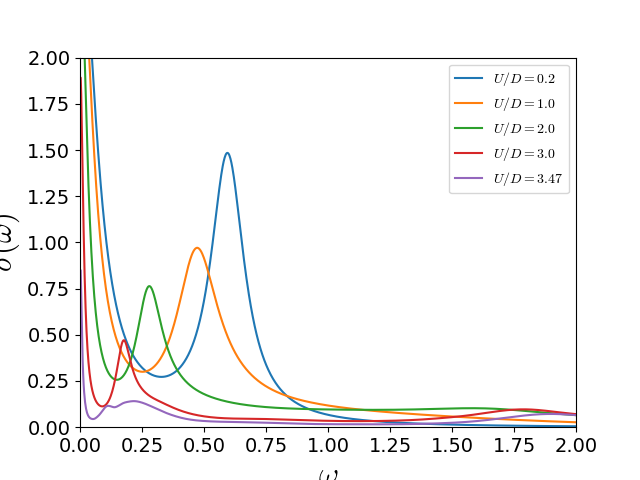

Dimer Mott transition Optical response¶
Track the optical conductivity from the correlated metal up to the transition point. The lost of overlap of bonding and anti-bonding bands at the Fermi level implies the transition. From the optical signal the Drude weight drops with raising U and the Inter-band transition signal lowers its excitation energy signaling how the two quasiparticles are renormalized closer together.
# author: Óscar Nájera
from __future__ import division, absolute_import, print_function
import numpy as np
import matplotlib.pyplot as plt
import dmft.common as gf
import dmft.ipt_real as ipt
import dmft.dimer as dimer
plt.matplotlib.rcParams.update({'axes.labelsize': 22,
'xtick.labelsize': 14, 'ytick.labelsize': 14,
'axes.titlesize': 22,
'mathtext.fontset': 'cm'})
w = np.linspace(-4, 4, 2**12)
dw = w[1] - w[0]
BETA = 800.
nfp = gf.fermi_dist(w, BETA)
tp = 0.3
gss = gf.semi_circle_hiltrans(w + 5e-3j - tp)
gsa = gf.semi_circle_hiltrans(w + 5e-3j + tp)
urange = np.arange(0.2, 3.3, 0.3)
urange = [0.2, 1., 2., 3., 3.47]
plt.close('all')
eps_k = np.linspace(-1, 1, 61)
pos_freq = w > 0
nuv = w[pos_freq]
for i, U in enumerate(urange):
(gss, gsa), (ss, sa) = ipt.dimer_dmft(
U, tp, nfp, w, dw, gss, gsa, conv=1e-4)
s_intra, s_inter = dimer.optical_conductivity(BETA, ss, sa, w, tp, eps_k)
ddm_sigma_E_sum = .5 * (s_intra + s_inter)
shift = -2.1 * i
plt.plot(nuv, ddm_sigma_E_sum, label=r'$U/D={}$'.format(U))
plt.xlabel(r'$\omega$')
plt.ylabel(r'$\sigma(\omega)$')
plt.xlim(0, 2)
plt.ylim(0, 2)
plt.legend(loc=0)
Total running time of the script: ( 0 minutes 3.529 seconds)